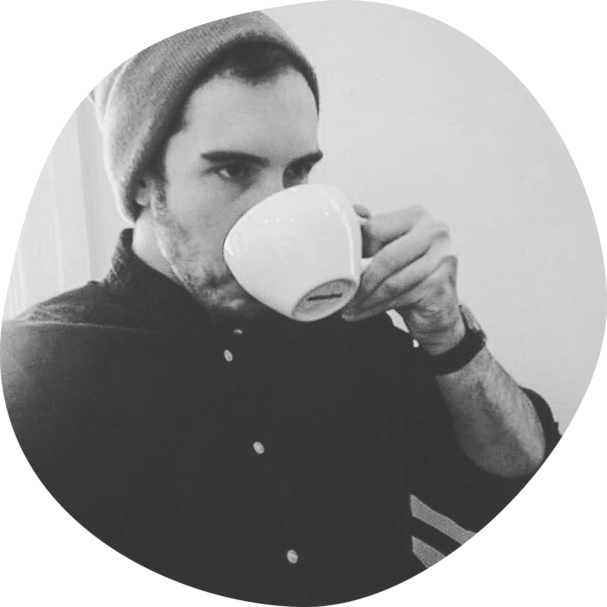

A Little Narrative
My creative journey began when I was just two years old. My father gave me a plastic tool kit as a birthday gift. Upon coming home one day, he discovered that I have driven a nail into the staircase with my plastic hammer. At that moment, he knew I was going to have an interesting future. Those creative juices led me into the realm of music. At the age of 15, I dropped out of high school and became a full-time touring musician signed with an indie label with the band, Chelsea Grin.
After two years of the rockstar life, I decided college was the next step, finishing my high school diploma in three months, I started school in fall 2010 and eventually graduated Cum Laude with a degree in Economics.
Throughout my college career, I started a string of companies ranging from a record label, band management firm, to a specialty coffee roaster. Each venture was a balance of creativity and analytical challenges that kept life interesting.
Post college, I decided to give the world of technology a try and accepted a position with Qualtrics. My position was extremely analytical and fun, but lacked the creative juju that I needed to keep the spice in life. After about a year, I stumbled upon the world of UX Design and was hooked. It seemed to be that delicate balance of creative and analytical challenges that I was missing.
After a 9-month bootcamp at Bloc learning the fundamentals of design and front-end web development, I landed an internship at Solutionreach where I quickly found my feet and moved from making small UI adjustment to owning designing four out of five major product lines which included the launch of three new products in less than a year.
In 2018, I made the move from Salt Lake City to Los Angeles and starting the LA chapter of Product Hive, a meetup group focused on continuous learning within product management and product design as well as working as a Product Designer at ChowNow.